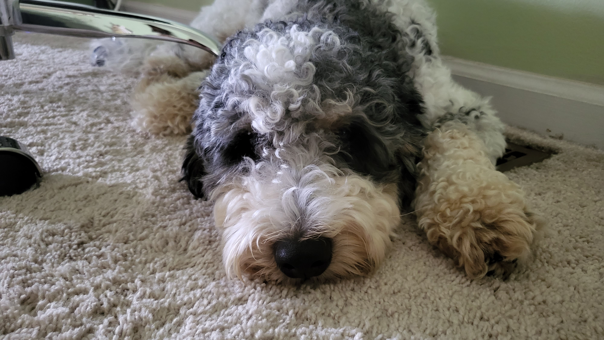
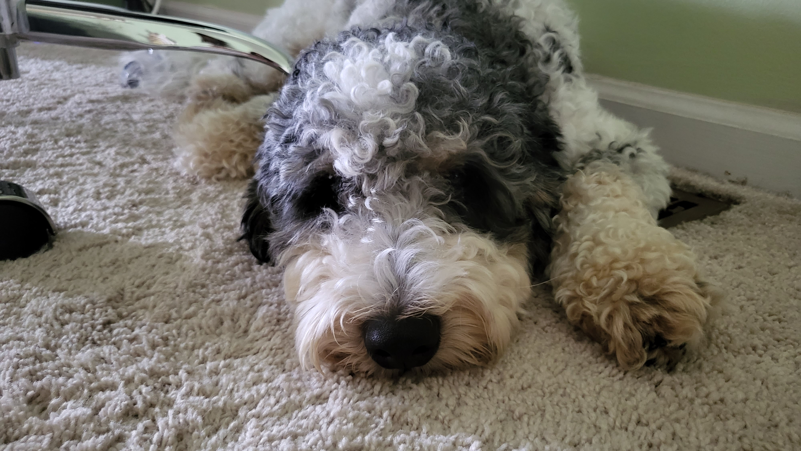

Milo
{kind=link}
Milo is a 6 year old schnoodle. He is super energetic and his favorite game is fetch, which he wants to play all the time — yes, even when it's pitch black outside or the weather is unideal. Milo is also loving and kind, at least to humans. When he's around other dogs, he is either jealous of the attention they're receiving, or ignores them because he has other priorities (chasing a ball).
Milo is also a pretty smart dog, although he doesn't always use it for good. He can roll over on command, and use his sense of scent to find a hidden treat. But he's also figured out some loopholes to get what he wants. For example, he has been trained to nudge the bell near the front door to indicate that he needs to be walked. Recently, though, he's learned that he can just pretend like he wants to go on a walk, but instead lead us around the house to the backyard so he can play. In case it wasn't clear: Milo loves to play. Although he can be sneaky, my family loves him more than anything.
Photo Gallery
Likes
- Playing fetch
- Table Scraps
- Belly rubs
Bacon Q Dog

Bacon Q. Dog is a 9yr old labradoodle. He prefers to spend his days lounging among the three different beds/couches that his family has gifted him. He enjoys a walk or two around the neighborhood, as long as he can pretend that he doesn't see any of the other animals to avoid the embarrassment of not wanting to admit he has no wolf-like skills in chasing them.
At night just as the rest of the family is ready to relax, Bacon suddenly wants to release all of his energy. He will place his toys on a mini couch and frantically drag the couch around, giving his toys "a ride." There is also a lot of rolling. Lots and lots of rolling.
Photo Gallery


Likes
- Belly rubs
- Playing tug-of-war
- Sneaking onto the couch
Milktea

Milktea is a Scottish fold with a personality of a princess. She loves her veggies and refuses to eat anything dropped on the ground. She makes it clear when she has a demand of any sort by complaining in a loud, distinguished manner. If what she says could be translated, it probably would be, “This is atrocious, the water container has been empty for the 3rd time this week. I want to see the manager.”
Despite her cuteness and royalty, she actually suffers from a genetic disorder intentionally brought upon by humans. I highly advise against keeping a Scottish fold because they are in constant pain when they reach around 2 years old. Cartilage accumulates around her paw joints and tail joints and it becomes painful for them to even walk. She is living evidence of human’s cruelty of breeding animals to look pretty while sacrificing the animals’ health.
Photo Gallery


Likes
- Individual corn kernels served on human hands.
- Sitting royally on suitcases to claim ownership of her humans.
- Being alone and sitting on soft surfaces in her free times.
Cooky

Cooky is an 11 month old Bernedoodle. He likes to play, run around, go on walks, eat snacks and treats (not his own dog food), get pets and belly rubs, and cuddle. You can usually find him playing with his toys in the living room, chilling in the office room with my dad, or cooling off in the garage.
He's still a baby, but he can get super hyper. Whenever someone rings the doorbell, Cooky gets really excited, barking and dashing towards the front door. He also jumps really high when he's hyper and wags his tail like crazy. Overall, though, he likes to chill and cuddle just as much as he likes to play.
Photo Gallery
 



Likes
- Dog cookies
- Pets and belly rubs
- Running around the house
Riley

Riley is a 2yr old goldendoodle. He is very active and loves attention. Riley can be pretty mischievous; as such, his favorite activity is begging for (or stealing) food, however getting cuddled on a cool floor comes as a close second. In addition, Riley loves to walk in his local park or hang out with his best friend Cosmo.
Riley would NOT survive in the wild. He is very stubborn, jealous, and pampered. He’s currently in his “terrible twos,” and must get everything his way. That said, Riley is loved by his family as a perfect, funny, and loyal dog
Photo Gallery


Likes
- Sneaking onto the couch
- Being grumpy after naps
- Peering onto kitchen countertops